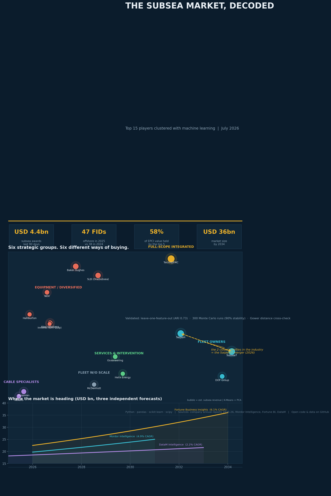
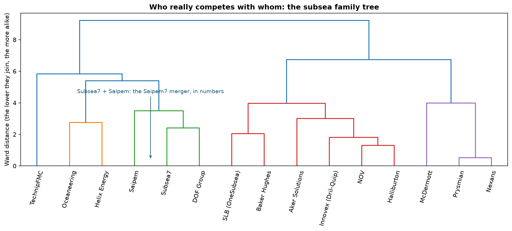
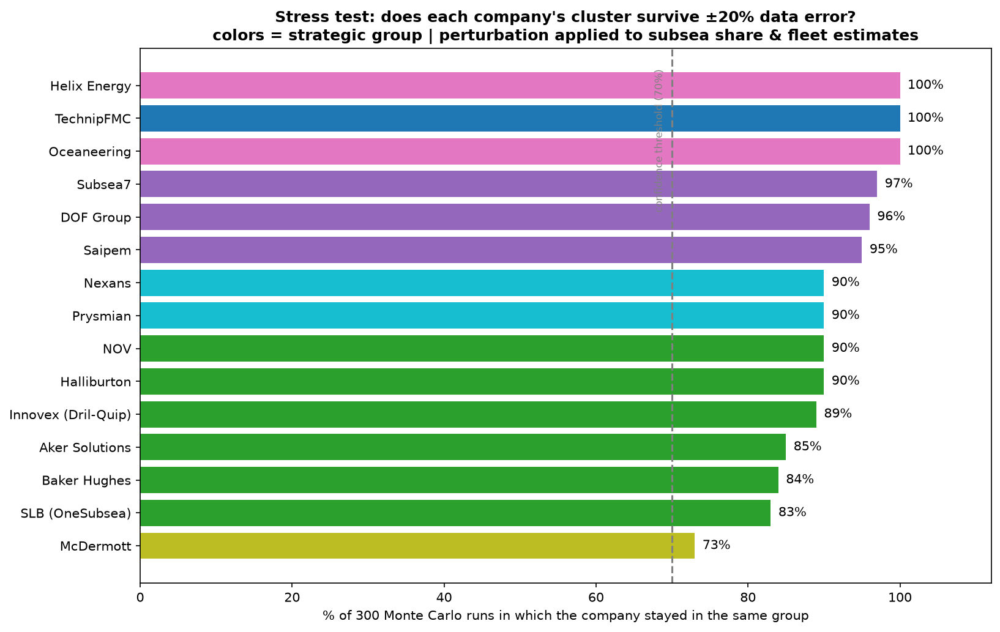

The Subsea Market,
Decoded
I clustered the fifteen largest subsea companies with machine learning. Six strategic groups emerged from the data, and one of them explains the biggest merger this industry has seen in a decade.
Subsea is not coming back. It is already back.
In the last ninety days alone, the industry awarded roughly USD 4.4 billion in subsea contracts: a supermajor SURF award in Brazil, a billion-dollar installation package in Angola, a cluster of tie-backs in Norway. Behind the awards sits a funded pipeline: Petrobras plans 180 new wells and 12 FPSOs in the pre-salt by 2030, and tie-back economics now put deepwater breakevens near USD 35 per barrel.
The subsea market is not one single thing. There are vessel owners, equipment manufacturers, cable makers and diversified giants, and they do not bid for the same contracts. This study maps who actually competes with whom.
The method, tool by tool
1 · Build the dataset
One row per company, nine features each: estimated subsea revenue, share of the business that is truly subsea, scope breadth (SPS, SURF installation, flexibles, cables, services), fleet size and Brazil presence. Sources: 2025 annual reports and market research. Every estimate is declared and editable.
2 · Standardize
Fleet ranges from 0 to 50 vessels; scope flags are 0 or 1. Without standardization the big numbers crush the small ones and the clustering is meaningless.
3 · Let the algorithm find the groups
I did not tell it which groups exist. I tested k from 2 to 7 and the silhouette score picked k = 6.
4 · Cross-check with a second method
Hierarchical clustering drew the same structure. Two independent methods, same map.
5 · Explain the outliers
For every company sitting alone, decompose the distance to its nearest neighbour and name the variable responsible.
Six strategic groups. Six different ways of buying.

The fleet owners: Subsea7, Saipem, DOF
Installation is king. And the finding I keep coming back to: the algorithm placed Subsea7 and Saipem as the two closest profiles in the entire industry, the exact two companies merging into Saipem7 in 2026. The math and the M&A bankers reached the same conclusion.
The lone integrated player: TechnipFMC
Isolated because it has too much: more than two standard deviations above the industry in scope breadth, the only company that manufactures equipment, makes cables and installs. On this map, isolation means moat.
The opposite case: McDermott
Also alone, for the opposite reason. The distance decomposition shows an installer's profile (surf_inst drives 41% of its isolation) without the scale of the fleet club. Same shape on the chart, opposite story.
The rest of the picture
Cable specialists (Prysmian, Nexans), services and intervention (Oceaneering, Helix) and the diversified giants (SLB, Baker Hughes, Halliburton, NOV, Aker, Innovex). Each group is a different buying center with different pain points and different procurement logic.

I tried to destroy my own study
A clustering of fifteen companies deserves suspicion, including mine. So before publishing I attacked it three ways. I removed each feature in turn and the groups held, with a mean Adjusted Rand Index of 0.73. I deliberately corrupted my own estimates by twenty percent across three hundred Monte Carlo simulations and got ninety percent average cluster stability. And I re-ran everything with Gower distance, the technically correct metric for mixed continuous and binary data, implemented from scratch in about ten lines. Same structure every time.

The difference between a weak study and an honest one is not the absence of limitations. It is admitting them.
This remains a descriptive, exploratory analysis: it quantifies and organizes known similarities rather than discovering them blindly, and it is sensitive to the features chosen. That is exactly why the dataset is open. If you have better numbers than my estimates, contributions are welcome.
Why a salesperson ran this study
I work in sales in this ecosystem, supplying mission-critical materials (buoyancy, insulation and protection systems) to the very players on this map, and I hold a postgraduate degree in data science. I believe the best commercial conversations start with genuinely understanding the client's market. This page is what that looks like in practice.
Consolidation is real: fewer, bigger buyers mean supplier qualification and relationships matter more than ever, and each cluster buys differently. Fleet owners buy schedule certainty. Integrated players buy technology and IP. Winning proposals speak the language of the cluster, not a generic subsea pitch.
Browse the code & data Download the notebook
Sources
Company press releases and 2025-26 annual reports (Subsea7, TechnipFMC, Saipem, Baker Hughes, Oceaneering) · Mordor Intelligence, Subsea Systems Market 2026 · Spherical Insights, Top 20 Subsea Companies 2026 · Fortune Business Insights · DataM Intelligence · All revenue figures are group-level and rounded; subsea share, fleet and scope flags are the author's declared estimates.